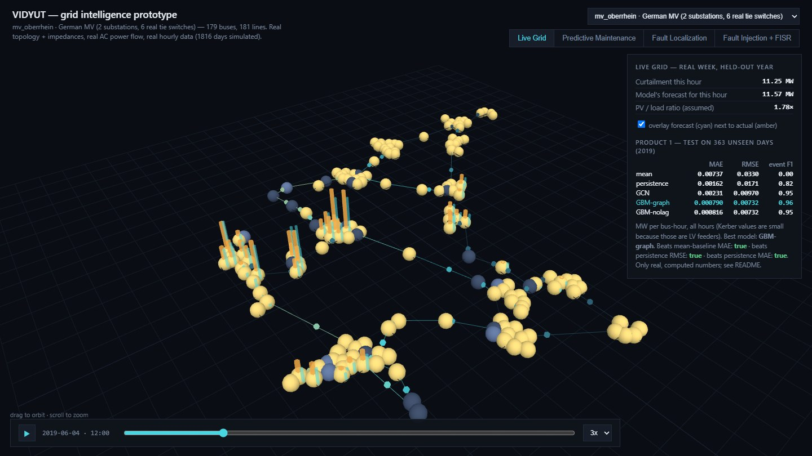
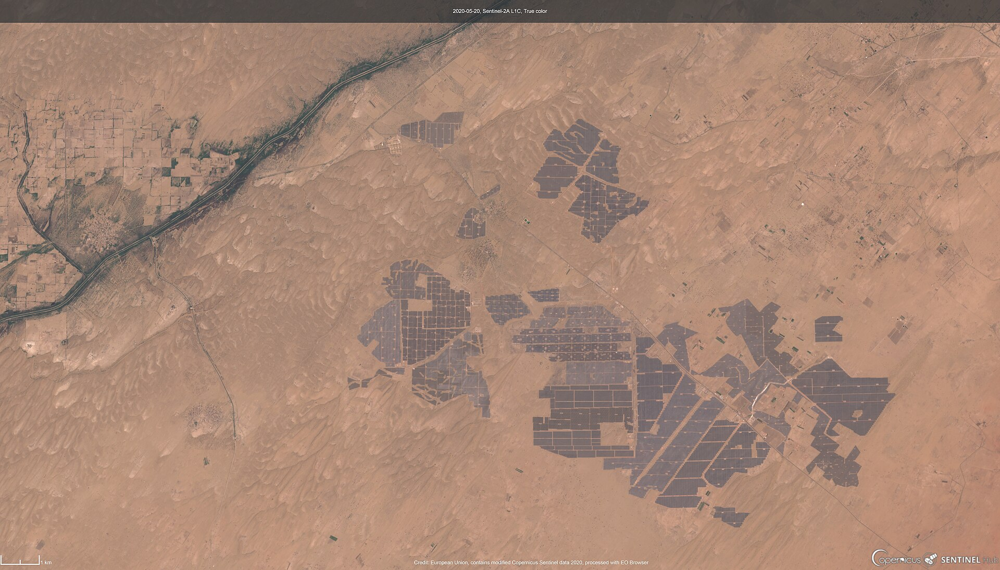
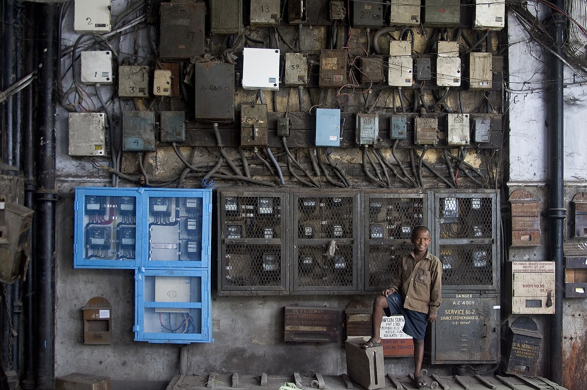
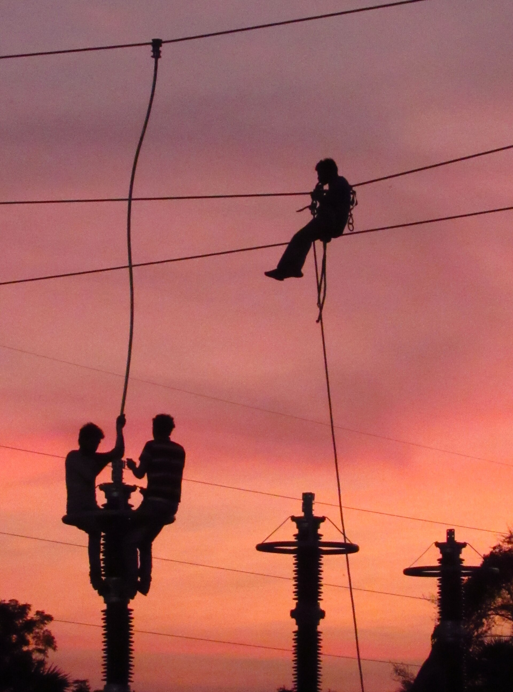
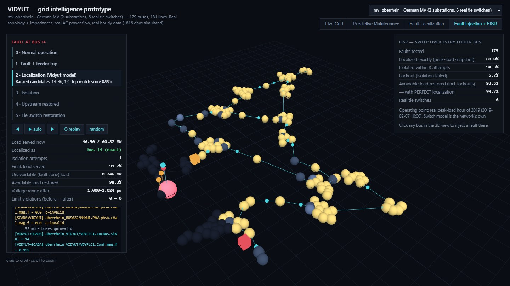
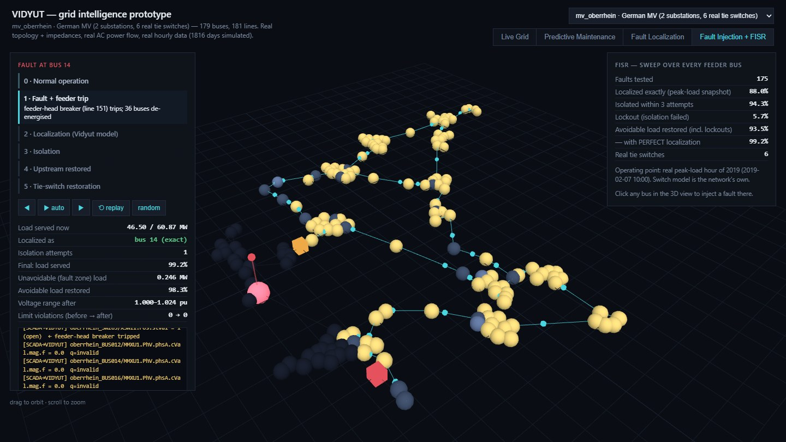
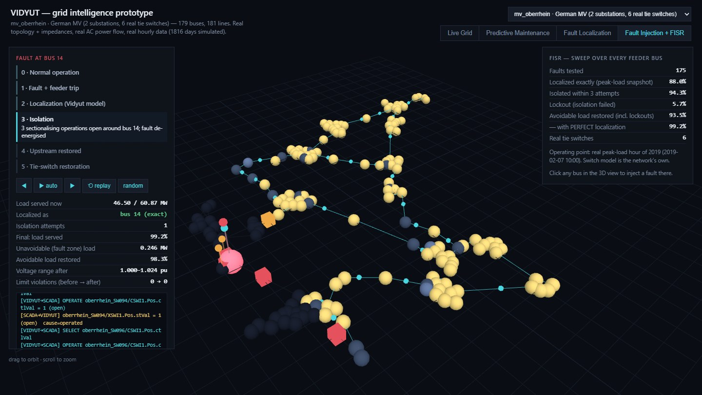
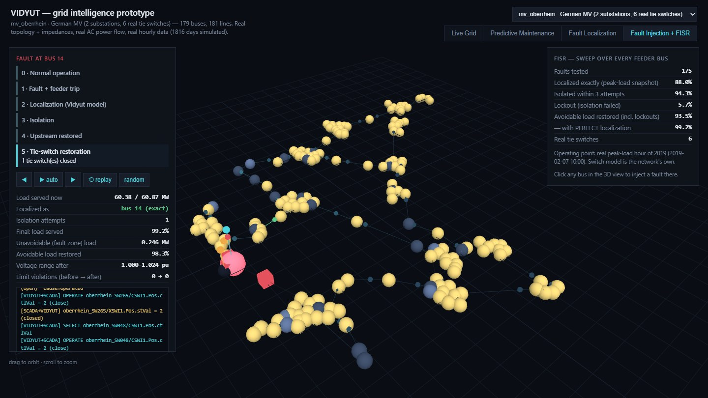
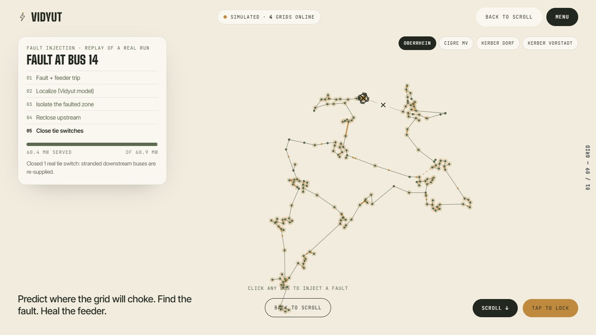

Curtailment seen coming
One hour ahead, on a year the models never saw.
AI-native grid intelligence · India · 2026
Predicts solar curtailment. Pinpoints faults. Reroutes power — before a crew is called.


Each house ≈ 100,000 homes' yearly electricity. India curtailed that much solar in April–June 2026 alone.
8.1 TWh of solar curtailed in one quarter.
Transmission isn't keeping pace with new solar.


When a feeder trips, someone has to work out where — then switch around it.
That search-and-switch loop is what Vidyut automates. We found no published national restoration-time figure, so we cite none.
Meters, sensors and SCADA you already have. No new hardware.
voltage · angle · current · sunlightSoftware-firstSensor-lightPhysics-checked
At midday solar output exceeds what the grid can absorb. Today operators throttle blindly; Vidyut forecasts which buses will bind, one hour ahead. Illustration
A fault at each bus dents voltage in a different pattern. Vidyut matches the pattern it sees to its library and names the bus. Illustration

A fault trips the feeder breaker. Three neighbourhoods go dark.
Voltage, angle and current signatures point to the exact bus.
Two switches open around the broken section — nothing more.
Breaker recloses, backup tie closes. Only the faulted block stays dark.
Live Dark Backup tie Illustration

The feeder trips: 46.5 of 60.9 MW still served.

Only the faulted block is isolated.

A tie switch closes: 60.4 of 60.9 MW served.
Screenshots from the running prototype (real Oberrhein grid model, AC power flow at every step). The page replays results precomputed by the real engine.

Switch between a 15-bus benchmark and 294-bus feeders.
Play it forward and watch curtailment build.
Inject a fault and watch the full detect → isolate → restore sequence.
One hour ahead, on a year the models never saw.
Down to the individual bus, on all four grids.
Wherever backup routes exist.
Tested on 4 real grid models and 593 injected faults. Full tables in the appendix. These are simulations — see the next slide.
4 published grid models · AC power flow every hour · 5 years of recorded weather and demand
Faults and theft are simulated — no utility publishes real incidents. Grids are German benchmarks.
A live Indian feeder. A utility pilot. Real SCADA protocols.
5 published / accepted AI papers — ethics, anomaly detection, sustainability, EV optimization.
Built the FISR engine, SCADA / DERMS layer and power-flow pipeline.
iOS, web and visual design — the interface and brand.
Biggest next step.
Replaces the German demand shape.
Needs a utility partner.
Validate on a live segment.
MMS / GOOSE / DNP3, IEC 62351.
Today: retrained per grid.
13 · The ask
Seed funding closes gaps 1–2 and buys the first field pilot (gap 4).
Vidyut F1 Persistence baseline
Boundary — events follow our own curtailment rule on real power flow, not a utility's logs. German data, held-out year 2019.
Voltage + angle + current Voltage only
Bug found & fixed: mismatched fingerprints cut accuracy 98% → 41%. At 30% sensor coverage, exact-bus accuracy is 35–59%.
With perfect localization With Vidyut's localization
Not modeled — protection timing, load shedding, DER anti-islanding, multi-fault events. 322 real switches on the large grid.